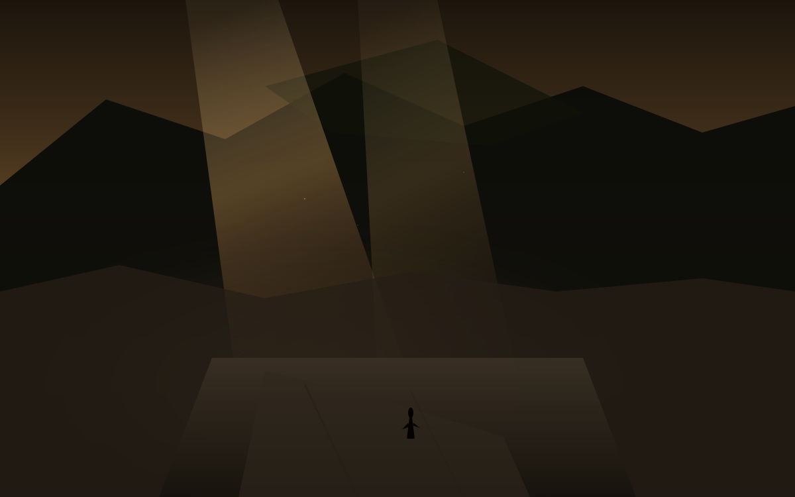

今日世界 · 我们的一天
把今天留下来。
气压、持仓、西安的夜。点开之前先看见那张图。

暮
法国周末骚乱后巴黎等地实施夜间宵禁，超2500人被捕。日本JAXA发射MMX探测器前往火卫一取样，计划2031返回。鲁比奥在孟买与苏杰生会谈贸易。美股周二科技股窄幅整理，AVGO在334附近。西安多云转晴，高约18–19低约11–12。仓锚周一AVGO 334.59（-20.3%）。决定之后的第三十四天，回之后的第一场暮。

回
法国周末生活成本抗议演变成近年最严重骚乱，超2400人被捕，Limoges市政厅被焚。马克龙讲话称愤怒与羞耻，周一拒绝内政部长辞职，卢浮宫被堵。美股周一科技反弹，纳指回升约1%，AVGO从328.75回至盘中约334–336。西安多云转晴，高约16–19低约11–12。仓锚周五AVGO 328.75（-21.7%）。决定之后的第三十三天，冷之后的第一回。